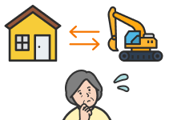
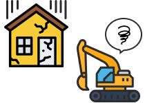
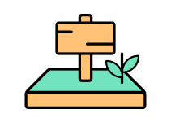
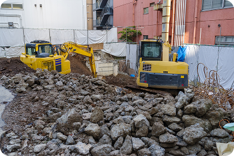

解体工事が初めての方
解体工事はほとんどの人が初めての事だらけで、不安に感じられる方が多くいらっしゃいます
ここでは、お客様からよく聞くお悩みをもとに、解体工事がはじめての方でも分かりやすいよう
「解体工事の基礎知識」をまとめております。
01
結局解体工事って
いくら必要になるの？
いくら必要になるの？
02
解体業者は
どの業者を選べばいいの？
どの業者を選べばいいの？
03
建て替えでハウスメーカーや
工務店と連携してほしい
工務店と連携してほしい

04
事前の準備は
何が必要になるの？
何が必要になるの？
05
相続した空き家を
解体したい...
解体したい...

06
土地活用のために
建物を解体したい...
建物を解体したい...

大切なのは「良い会社選び」!!
解体業者の中には、多くの人が初めて解体をするという弱みに付け込み、
はじめの見積もりを小さく出し、追加費用で高額請求する業者もいます。
また、近隣トラブルや工事中のトラブルが頻繁に発生する業者にも注意が必要です。
はじめの見積もりを小さく出し、追加費用で高額請求する業者もいます。
また、近隣トラブルや工事中のトラブルが頻繁に発生する業者にも注意が必要です。
現場調査中の説明の丁寧さや、スピード対応力、適正な価格を提示しているかなど、
良い業者の基準を満たしているかを事前に下調べしておく必要があります。
良い業者の基準を満たしているかを事前に下調べしておく必要があります。
01
解体工事の費用っていくら？？
適正価格を知る!
解体工事の相場は
※木造住宅の20~30坪の解体費用相場
80～200万円
解体費用は、建物の構造（木造・鉄骨造・RC造など）や、建物の周辺の環境要因（道
路幅や近隣住宅との距離など）によって大きく変動します。
また、建物内の残置物の処分費用や、解体工事後に地面から地中埋設物が出土した場 合にも別途費用が掛かります。
また、建物内の残置物の処分費用や、解体工事後に地面から地中埋設物が出土した場 合にも別途費用が掛かります。


解体費用を見る
02
どんな業者を選べばいいの？
見極める条件
❶見積のわかりやすさ
❷地域密着の会社
❸許可を持っている
❹近隣対策が万全
❺対応の丁寧さ
地域密着の会社は、営業エリアを限定しているため、対応が早く丁寧です。
また、見積もりの提出時に内容の説明があったり、解体工事後のフォロー があったりする会社を選ぶようにしましょう。
解体工事の専門家として、安全でトラブル０に努める会社が良い会社です。
また、見積もりの提出時に内容の説明があったり、解体工事後のフォロー があったりする会社を選ぶようにしましょう。
解体工事の専門家として、安全でトラブル０に努める会社が良い会社です。

選ばれる理由を見る
03
解体前後でそれぞれ確認が必要です!
必要な手続き
解体前：
❶ライフライン手続き
解体後：
❷建物滅失登記
解体工事の着工前に、施主様より電線や水道、ガス管などライフラインに関わるものを撤去 する連絡を各契約先にしなければなりません。
着工前に手続きが完了していない場合は、着工ができない可能性がありますので、注意が必要です。
また、解体工事後には「建物滅失登記」を法務局に届け出なければなりません。
土地家屋調査士による申請の代行が可能ですが、通常3～5万円の代行費用が発生します。
着工前に手続きが完了していない場合は、着工ができない可能性がありますので、注意が必要です。
また、解体工事後には「建物滅失登記」を法務局に届け出なければなりません。
土地家屋調査士による申請の代行が可能ですが、通常3～5万円の代行費用が発生します。
ご不明店は千葉スピード解体まで